绕着原子行走的人
错乱的几何问题
孤零零的直尺
有了直尺之后，我们就可以画直线。刻度间距为两个单位的直尺不仅可以用来画直线，还可以标记出间距为两个单位的点。虽然现在我们手头只有这样一把直尺，但已经足够解决问题了。
解这道题时需要利用一条基本原理，即从同一点出发的两条直线的发散速度保持不变。我们需要想办法测量两条发散直线之间的距离，以创建另一条长度为1个单位的线段，具体过程如下：
步骤1：画两条相交的直线。这两条直线就是我们需要的发散直线。在两条直线上分别标出与交点距离为两个单位的点，然后利用这两个点，继续标记两个距离为两个单位的点。
步骤2：用直线分别连接两次标记的点。两条连线相互平行。在下面那条连线上标记与其中一个端点相距两个单位的点X。
步骤3：从交点开始，画一条通过点X的直线，并将它与上方那条平行线的交点标记为点Y。上方平行线由左侧端点到点Y的距离（下图中加粗部分）为1个单位。至此，问题迎刃而解。
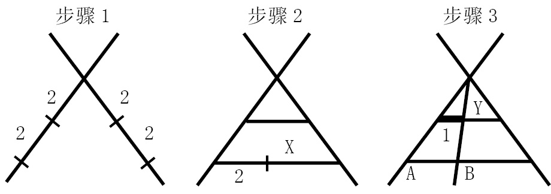
接下来，我向大家介绍其中的原理。我把最初画的两条直线中的一条记作直线A，另一条记作直线B。直线A与直线B在交点处的距离为0。沿着直线B向下匀速移动时，从直线A沿任意固定角度到直线B的距离都在以恒定的速度增加。因此，如果直线A到直线B在点X处的线段长度为2，从直线A沿平行线到直线B的线段长度就肯定是1，因为后者的长度是前者的一半。
绕地球一圈的绳子
这条绳子可以抬高120米左右，与伦敦市中心摩天大厦“中心塔”（Centre Point）差不多高。这同样是一个出人意料的答案。把围绕地球一周、长度为4万千米的绳子增长到40 000 001米，绳子的一个点可以抬升的高度非常高，20头长颈鹿骑在摩托车上叠罗汉，都可以轻松地从绳子下方通过。
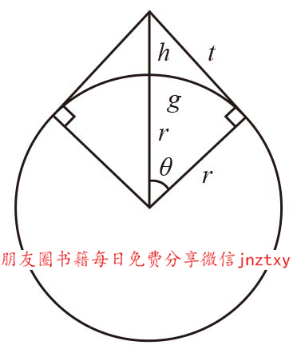
不过这一次，地球的大小与答案密切相关。计算时需要用到三角学知识，这对大多数读者来说可能难度过高。因此，如果你正确地画出图形，而且解题思路正确，就应该得满分。图中的r表示地球的半径，h是我们要求的值，即绳子在长度不变的情况下可以达到的最大高度。绳子最高点到地面的绳长是t，而绳子的两个端点之间沿地面的距离是g的两倍。
我们可以用r来表示h，但要注意，这可不太容易。如果你从来没有学过三角学，那么你肯定看不懂。我们先是注意到t和地球半径相切，所以我们得到一个直角三角形，其中斜边是r + h，两条直角边分别是r和t。根据勾股定理，可以得到
（1）t2 + r2 = (r + h)2
我们知道θ角的余弦是r/(r + h)，所以
（2）θ = cos–1 r/(r + h)
在用弧度表示时，θr = g，所以
（3）r cos–1 r/(r + h) = g
此外，题目还告诉我们：
（4）2g + 1 = 2t
上述方程经整理、化简（化简过程在此处不列出），就会得到
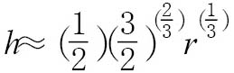
已知r = 6 400 000米，所以h ≈ 122米。
至此，问题得以解决。为完整起见，我写出了解题过程，但我保证后面再也不会涉及三角学。
街头聚会的彩带
同上一个问题一样，这道题的目的是让我们正确认识我们对空间的直觉。灯柱略高于7米，与维多利亚时期的两居室房子差不多高，但远高于世界上最高的长颈鹿。它高得超出你的想象了吧？
利用勾股定理，我们可以轻松解答这道题。如下图所示，灯柱切割出了两个直角三角形。
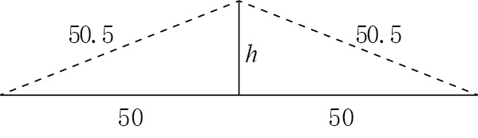
彩带构成了两个三角形的斜边，地面和灯柱分别构成了另外两条边。因此：
h2 + 502 = 50.52
h2 + 2 500 = 2 550.25
整理后就会得到：
h2 = 2 550.25 – 2 500 = 50.25
所以：
h =
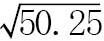
= 7.1骑上你的自行车，夏洛克！
要推断出自行车的行进方向，我们先要确定哪条车轮印是前轮留下来的，哪条是后轮留下来的。因此，亲爱的“华生”，我们需要学会根据车轮印的曲线判断车轮的行进方向。
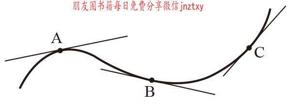
如果车轮印是直的，车轮的行进方向就与车轮印的方向一致。然而，如果车轮印是弯曲的，车轮的行进方向就会与车轮印上各个点的切线方向保持一致。（切线是指与某条曲线只有一个接触点的直线）。为便于理解，请仔细观察右图中独轮车留下的车轮印。车轮在点A、点B和点C时的朝向分别与我标出的各条切线方向一致。
自行车有两个车轮，前轮可以指向任意方向，而后轮在行进方向上没有自由——它必须始终指向前轮的行进方向。
所以，无论后轮在哪个位置，前轮都在后轮印的切线方向上，且与后轮之间的距离一定等于自行车的车身长度。换句话说，后轮印的所有切线一定都会与前轮印相交，且切点与交点间的距离一定等于车身长度。
现在，请大家查看下图中粗线上的点D。该点的切线与两条车轮印都不相交。因此，我们可以断定点D所在的那条曲线不是后轮印，而是前轮印。
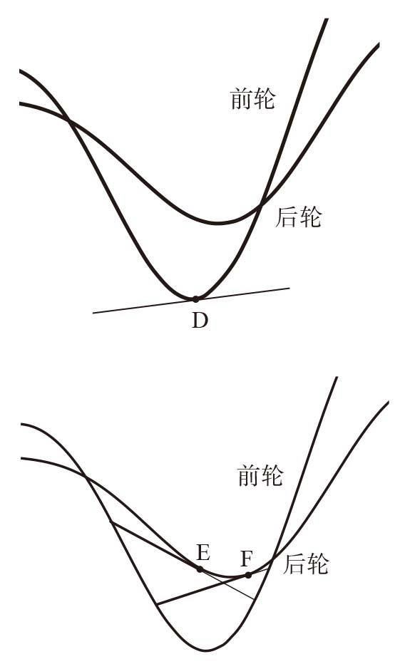
现在，我们可以确定自行车的行进方向了。我们知道哪条车轮印是后轮留下的，上面的讨论还告诉我们，沿后轮印上的任意一条切线，朝着自行车的行进方向前进一辆自行车的车身长度，就会与前轮印相交于某一点。因此，我们在后轮印上任取两点E、F，分别画出后轮印的切线，观察这两条切线与前轮印相交的情况。从左图可以看出，点E和F左侧的两条线段长度相等，而右侧的两条线段长度不相等。车轮之间的距离在行进过程中是不会改变的，由此可见，自行车的行进方向是由右向左。太简单了！
模糊数学
我特别喜欢这个问题，因为它反映了一个奇怪的现象：车轮的顶部总是跑得比底部快。
车轮沿着水平面滚动时，车轮上的点需要完成两个不同方向上的运动。它们需要沿着车轮前进方向水平运动；此外，它们还需要绕着车轮中心旋转。这两个方向上的运动有时相互补充，有时又会相互抵消。我们在车轮上任取一个点。如下图所示，当该点位于车轮顶部（点A处）时，该点的水平运动和旋转运动就会相互补充。但是，当这个点在车轮底部（点B处）时，水平运动和旋转运动的方向正好相反，就会相互抵消。从观察者的角度看，车轮滚动时，顶部的速度一直是车轮水平速度的两倍，而车轮底部一直是静止的。由此可见，轮子下半部分各点的运动速度比上半部分各点要慢。
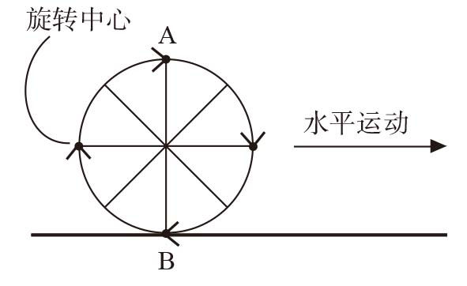
因此，正确答案是第二幅图。因为在这幅图中，上面的五边形模糊，而下面的五边形非常清晰。如果摄影师将相机的曝光时间设置得足够短，速度慢的那个五边形就会留下清晰的图像，但速度快的那个五边形肯定比较模糊。如果你喜欢画画，可能马上就会明白其中的道理。在画运动的车轮时，顶部经常会做模糊处理。
绕着圆转圈
你的答案是不是(b) 3？出题人也认为这是正确答案。
按照出题人的想法，学生们应该完成以下计算过程。既然圆A的半径是圆B的1/3，那么圆A的周长同样是圆B周长的1/3（因为周长等于2π乘以半径）。也就是说，三个圆A的周长之和等于圆B的周长。圆A滚动一圈经过的距离等于它的周长。所以，圆A转动3圈，移动的距离等于自身周长的3倍，也就是圆B的周长。
如果没有认真研究过一个圆绕着另一个圆转圈的运动特点，就很难发现这其中的错误，出题人显然也犯了这个错误。接下来，我们来看看到底哪个答案是正确的。取两枚相同的硬币，然后让一枚硬币绕着另一枚滚一圈。硬币的周长相等，所以你可能认为（就像那道SAT测试题一样）硬币只需要滚动一圈就可以回到出发点。但是，女王的头会转动两圈！当一个圆绕着另一个圆滚动时，它同时还要完成另外一项运动——在绕这个圆滚动时，它还要自转。
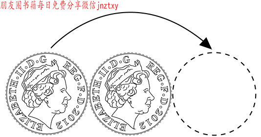
如果SAT出题人问的是“圆A沿直线滚动多少圈，通过的距离正好等于B的周长”，正确答案就应该是3圈。但是，当A绕着B转动时，正确答案应该是4圈。
出题人给出的几个答案都不是正确答案。正因为如此，那一年的考生在这道题上几乎全军覆没。这个错误被发现之后，《纽约时报》和《华盛顿邮报》都进行了报道，令出题人十分尴尬。
8张白纸
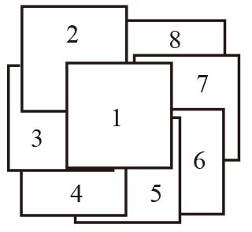
在1下面紧挨着1的只能是左上角的那张纸，接下来就是左上角下方的那张，其余的纸按照逆时针方向构成单螺旋，依次排列。
一分为二的正方形
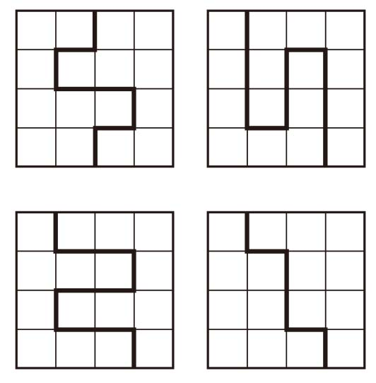
翅膀和透镜
如果我们把图形补全，这个问题就容易理解了。将4个相同的1/4圆拼到一起，就会得到一个大圆，其中包含4个相互重叠的小圆。
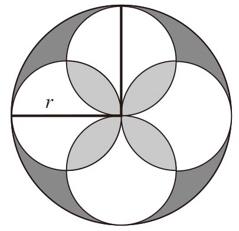
如果大圆的半径是r，则它的面积是πr2。
小圆的半径是大圆的1/2，因此每个小圆的面积是
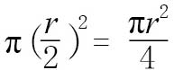
。现在，问题就简单了。小圆的面积正好是大圆的1/4，所以4个小圆的面积相加正好等于大圆的面积。两者面积相等，这对我们来说非常有用，因为图形中正好有4个小圆。
这4个小圆相互重叠，重叠之后的总面积是多少呢？
重叠之后的总面积等于小圆面积（πr2）乘以4，然后减去重叠部分的面积。重叠部分是由4个透镜状的图形构成的。
（1）小圆重叠之后的总面积=πr2 – 4个透镜形状的面积
我们还可以看出，大圆的面积（πr2）减去翅膀形状的面积就等于小圆重叠之后的总面积。
（2）小圆重叠之后的总面积=πr2 – 4个翅膀形状的面积
结合这两个方程，就可以得到：
πr2 – 4个透镜形状的面积=πr2– 4个翅膀形状的面积
显然，4个透镜形状的面积等于4个翅膀形状的面积。由于4个翅膀形状的面积都相等，4个透镜形状的面积也相等，所以每个翅膀形状的面积与每个透镜形状的面积也相等。
日本数字牌中的圆
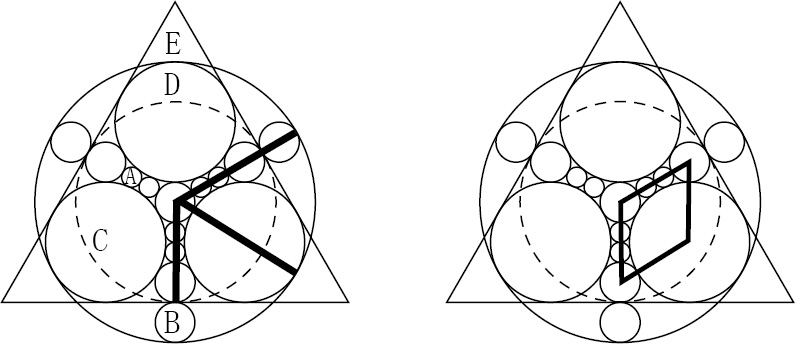
这个图形如此诱人，是因为所有圆完美地结合在一起，结合方式恰恰也是解决问题的关键，我们可以借此对它们的半径进行比较。
我们把这些圆按照由小到大的次序依次命名为A、B、C、D和E，它们的半径分别为a、b、c、d和e。根据题意，我们需要用a表示d。
在第一幅图中，我画了3条线。竖直的那条线是虚线圆D的半径，但它同时还等于圆A的半径的4倍加上B的半径的3倍，所以我们可以写出下面这个方程：
（1）d = 4a + 3b
同理，另外两条粗线既是圆E的半径，也可以用其他圆的半径表示：
（2）e = 4a + 5b
（3）e = b + 2c
巧妙地利用第二幅图中的菱形，我们还可以得到下面这个方程：
（4）4a + 2b = b + c
现在，我们有4个方程，5个未知数。由于我们希望用a表示d，所以我们应该想办法去掉其他的项。
我们可以先用（2）和（3）中的等量关系去掉e。
4a + 5b = b + 2c
所以：
4a + 4b = 2c
（5）2a + 2b = c
把上式代入（4），就会得到：
4a + 2b = b + 2a + 2b
（6）2a = b
将（6）代入（1）就会得到：
d = 4a + 6a = 10a
至此，我们得出答案：D的半径是A的半径的10倍。
日本数字牌中的三角形
我把圆按从小到大的顺序重新命名为A、B、C，它们的半径是a、b、c。我们的思路是先用a表示b，然后用b表示c，从而完成c = 2a的证明。
我在下图中用虚线画了一个三角形。该三角形的斜边是圆B和圆A的半径之和，因此边长是b + a。三角形其他两边的边长分别是b和2b – a。第二条直角边的边长可以用以下方式推断出来：该边边长是正方形边长的一半减去圆A的半径，正方形的边长是4b。
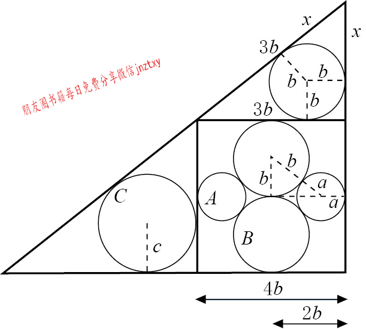
根据勾股定理，直角三角形斜边的平方等于其他两边的平方和，所以
(b + a)2 = b2 +(2b – a)2
展开后有：
b2 + 2ab +a2 = b2 + 4b2 – 4ab +a2
合并同类项：
6ab = 4b2
进一步化简就会得到：
3a = 2b
最后可以得到：
b =
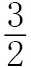
a就这样，我们完成了用a表示b的任务。
接下来，我们再来看上图顶部的那个三角形。我从圆心画了三条线与三角形的三条边相交。三条直线与三条边分别垂直，把三角形分割成一个b×b的正方形和两个风筝形状。指向左边的“风筝”的长边边长是3b，因为它等于大正方形的边长减去圆B的半径。由于风筝都是对称的，所以另一条边的边长也必然是3b。设右边的风筝的边长是x，那么根据勾股定理：
(3b + x)2 = (b + x)2 + (4b)2
展开后得到：
9b2 + 6bx + x2 = b2 + 2bx + x2 + 16b2
合并同类项后得到：
4bx = 8b2
所以：
x = 2b
图形上部的三角形竖直角边的边长是x + b = 2b + b = 3b。图形左下部三角形的竖直角边边长是4b。这两个三角形虽然大小不同，但是形状相同，因此边长之比（
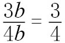
）肯定等于这两个三角形内切圆半径之比b/c：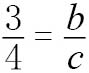
由此可知：
c =
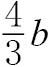
至此，我们实现了用b表示c和用a表示b这两个目标。
那么，用a表示c的表达式为：c ==
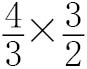
a = 2a。踩在榻榻米上
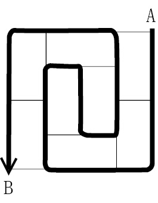
15个榻榻米垫子
答案选自17世纪最受欢迎的日本数学教科书《尘劫记》（1641年版）。
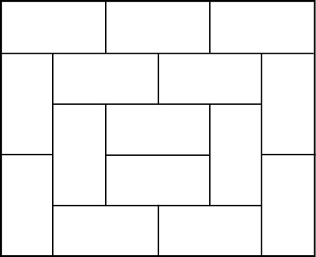
芦原伸之的垫子
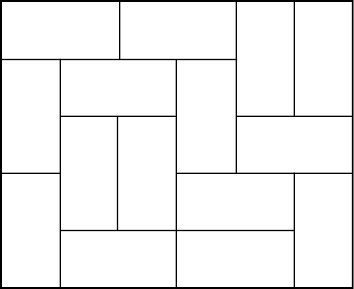
讨厌的楼梯
用17个榻榻米垫子无法铺满这个被去掉两个角的6×6的房间。如下图所示，我们把房间的地板涂成像棋盘那样黑白相间的样子，就会知道铺不满的原因。每个垫子都会覆盖一黑一白两个方格，因此，如果垫子可以铺满房间，那么黑色方格与白色方格的数量肯定相等。但是，这个房间的白色方格多出了两块，所以我们不可能用垫子铺满房间。
这个问题常见的表现形式是，借助多米诺骨牌和“残破”的棋盘。利用占两格的多米诺骨牌，是否可以完全覆盖相对两角被切去的棋盘？答案同样是否定的。
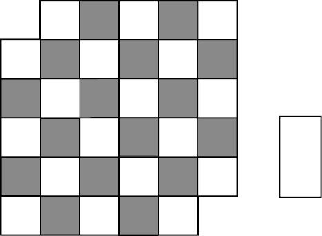
位置不定的楼梯
在证明本题时，我们需要使用20世纪70年代在IBM（国际商用机器公司）担任研究部主任的拉尔夫·E. 戈莫里（Ralph E. Gomory）提出的一个巧妙方法。戈莫里当时是用多米诺骨牌覆盖棋盘，但证明方法相同。如下图所示，先画一条通过所有方格且不重复的线。在第二幅图中，随意去除一黑一白两个用于安装楼梯的方格，刚才画的那条线就被分成了两段，而且每段覆盖的方格数都是偶数，所以都可以用榻榻米垫子完全覆盖。无论这条线如何画，无论所选的黑白两个方格位于何处，上述证明都成立。
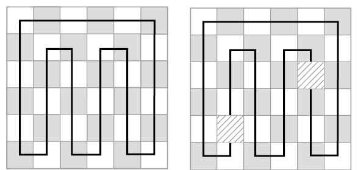
木板问题
这个问题是谢莉尔的生日问题（第21题）的作者、新加坡人约瑟夫·杨告诉我的（他第一次看到这类问题是在20世纪80年代）。如图A所示，最显而易见的答案就是建筑师所说的“天窗”，也就是倾斜屋顶上的垂直窗户。很多建筑师都兴高采烈地说出了这个答案。此外，B和C也是正确答案。
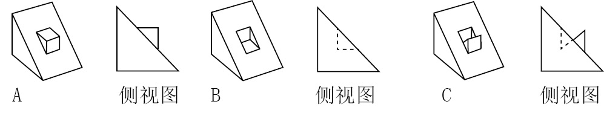
墙上的照片
这个问题有物理方法（不会吧？）和数学方法（太棒了！）两种解法。可以预见的是，在简洁性方面物理方法远逊于数学方法。在墙上钉钉子时，让这两颗钉子尽可能地接近，使它们可以夹住从中间穿过的绳索。绳索弯曲成W形，并让W中间向上的部分夹在两颗钉子之间。由于钉子可以夹住绳索，所以照片不会滑落。但是，如果有一颗钉子脱落，照片就会随之掉落。这个方法虽然很丑陋，但不失为一个有效的办法。
下面向大家介绍一个更好的方法。
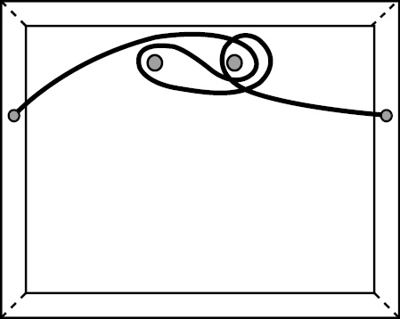
但它并不是我最喜爱的方法，因为在我明确表示可以用波罗米昂环建立数学模型之后，我希望你从波罗米昂环出发，通过反向推理找出答案。波罗米昂环中的任意一个环被移除后，另外两个环就会自动脱离。本题涉及三个要素（两颗钉子和一条绳子），当其中一个要素被移除后，整个结构就会解体。最大的难点在于，如何用两颗钉子和一根绳子构建波罗米昂环，因为从外观上看它们与三环没有任何相似之处。
再想想波罗米昂环有什么特点。它们可以是圆环，也可以是像“死亡战士之结”那样的三角形。事实上，只要它们相互连接的方式保持不变，就可以是我们希望的任何形状。例如，我们可以想象每颗钉子都是一个刚性环的一部分：环路随着钉子的一端进入墙壁之后，向上弯曲，再回过头来与钉子的另一端相连。我们还可以想象绳子首尾相连，形成了一个绕房间一圈的大环。如果这三个“环”以波罗米昂环的方式连接起来，那么拿掉一颗钉子，环绕在另一颗钉子上的绳子就会自动脱落，从而使问题得到圆满解决。
那么，到底该怎么做呢？我亲自动手，用两个塑料环和一根绳子做了一个波罗米昂环，如下图左侧图形所示。然后，我把两个塑料环分开，并排放置（如下图右侧图形所示）。此时，这两个塑料环就“变成”了墙上的钉子，绳子在它们之间构成的环路（如下图中间图形所示）就是我们要找的答案。
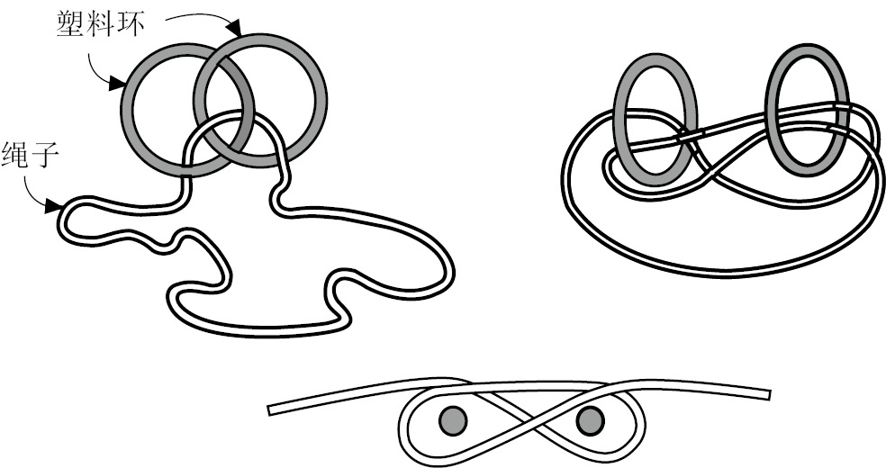
请注意，我们感兴趣的并不是3个完整的“环”，而是代表两颗钉子和照片挂绳的那个部分，因为3个环就是在这个部位彼此相连的。“环”的其余部分，包括钉到墙壁内部的钉子或环绕房间的绳子，都与本题无关。
值得一看的餐巾环
我们继续前面的分析，把这道题做完。如截面图所示，餐巾环的高度是6厘米，高度的一半是3厘米，所以圆顶的高度h等于r – 3。
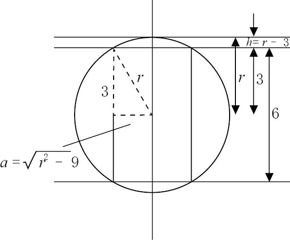
我们可以利用图中的虚线直角三角形求出圆柱体的截面半径a。根据勾股定理，斜边的平方等于其他两边的平方和，所以r2 = a2 + 32，即
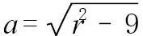
。接下来就是本题的难点了。前面已经说过餐巾环体积的计算公式是：
球体的体积–圆柱体的体积– 2×单个圆顶的体积
因此，我们可以得到：
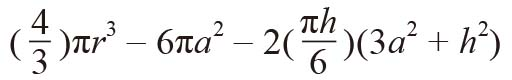
用包含r的表达式替换上式中的a和h：
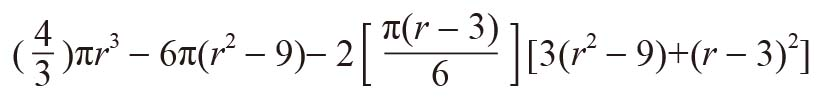
展开之后会得到：
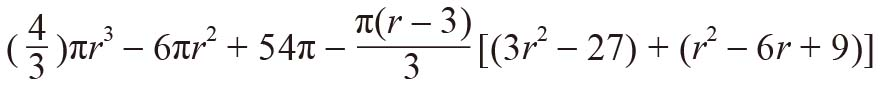
去括号后可得：
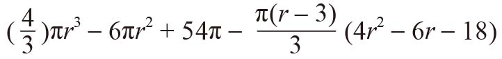
这个算式还可以变得更长：
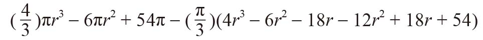
抱歉，要让大家完成如此复杂的计算：
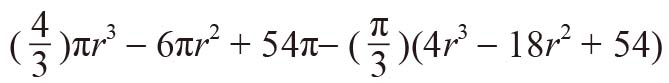
胜利就在眼前：
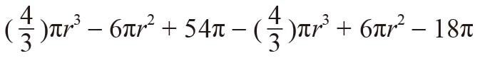
消去含r的项，就会得到36π。
这个答案真令人吃惊，竟然没有含r的项，也就是说球体的大小与问题无关！
所有高为6厘米的餐巾环体积都是36π。利用橙子大小的球体制成的餐巾环，与利用浮水气球（甚至月球）大小的球体制成的餐巾环，只要高度是6厘米，它们的体积就都相同。
餐巾环的圆周长变长时，它的厚度就会变薄。无论球体多大，餐巾环圆周长增加对体积的影响与厚度减小时的影响正好相互抵消。太神奇了！
面积难题
沿虚线把图形扩大。区域A加上标有24平方厘米的区域，总面积等于9厘米×5厘米，因此 A的面积 = 45平方厘米 – 24平方厘米 = 21平方厘米。此外，A + B = 5厘米× 8厘米= 40平方厘米。所以，B = 19平方厘米。
B与标有19平方厘米的区域宽度相同、面积相等，因此高也一定相等。由此可见，这两个矩形全等，即A与我们要求面积的那个矩形不仅等高，而且等宽。所以，这两个矩形面积相等，都是21平方厘米。
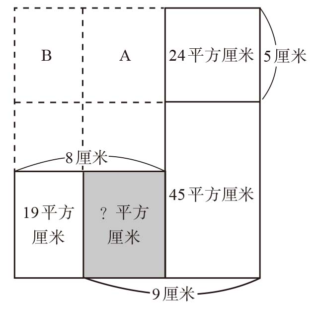
四方形问题
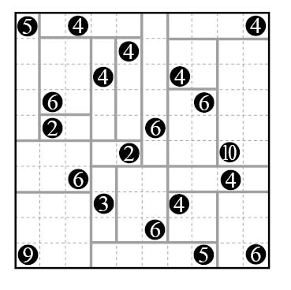
数回
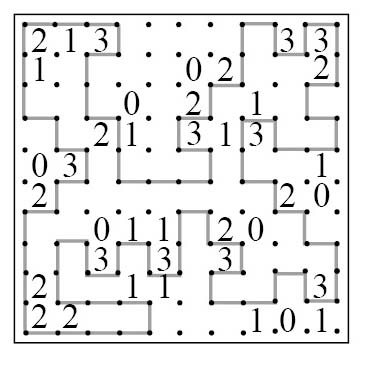
递减高尔夫
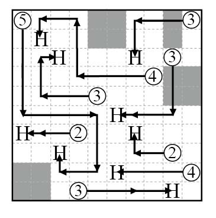
装电灯泡
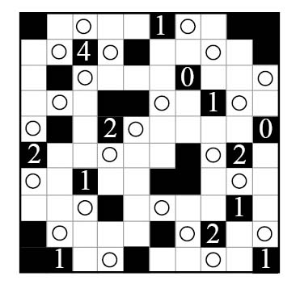
黑暗的房间
本题的答案不止一个，但解题思路相同。符合要求的房间至少有6堵墙，形状与有三个尖角的忍者飞镖（日本武士使用的星形武器）相似。从建筑的角度来看，四方形的房间可能更现实一些。
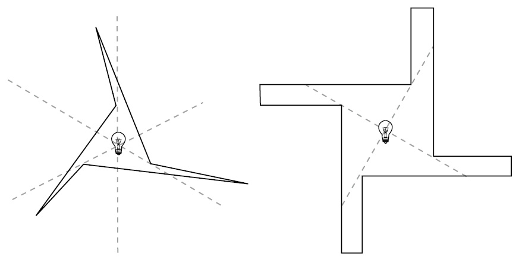